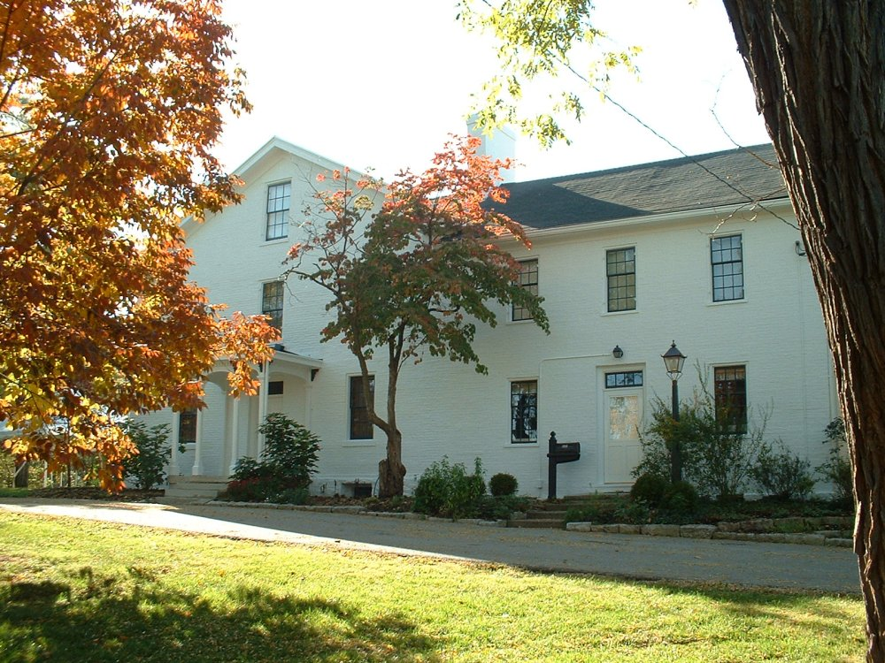
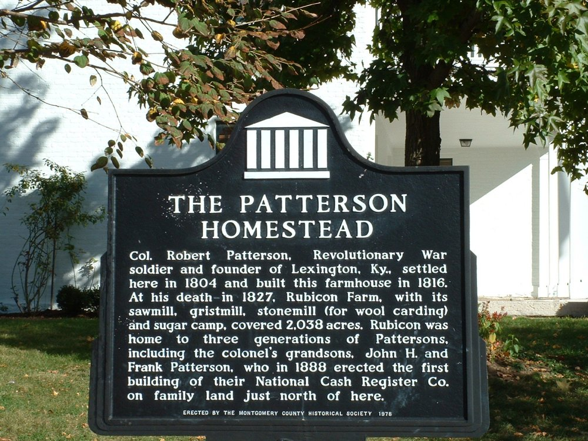

Patterson Homestead

Colonel Robert Patterson has one of the two most famous names associated with Dayton; he gave Wright-Patterson Air Force Base half its name. His homestead, a three-story 1816 brick farmhouse, is now owned by the Montgomery County Historical Society and is open to the public as a restored ninteenth-century family home. It is located on Brown Street in Dayton.

This building is haunted by several ghosts. They are thought to be those of the members of the Patterson family, especially since one who is sometimes seen walking up the stairs to the off-limits third floor is dressed in military regalia. Children's laughter is heard throughout the house, and a visiting psychic once claimed to have felt the presence of a mother rocking her sick child. One Christmas the drying gingerbread men were jerked off their line overnight. Strong breezes are often felt inside, and sometimes the ghosts will do something mischevious, like locking a volunteer in one of the rooms.
Special thanks to Ryan for the pictures.
Back